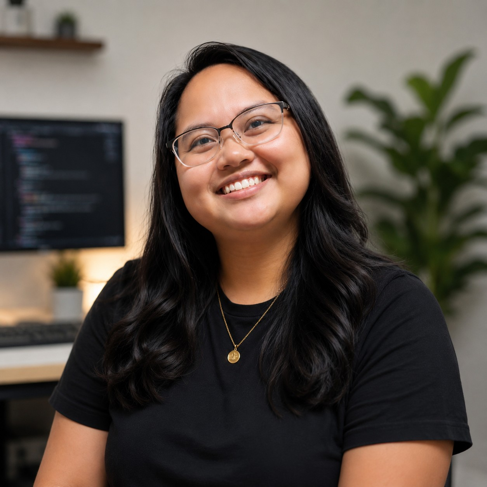
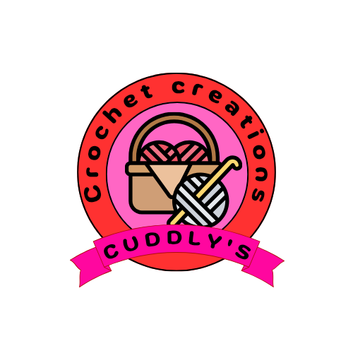

A bit more about me
My full name is Xiomara Chayenne Simone Wirodikromo
I want to build games and websites, travel the world, and be happy — that's more or less the whole plan. I'm an ICT student working toward the technical side of that (software engineering, databases, application development), one structured, documentation-heavy step at a time.
Outside of school, I'm usually watching a movie — mostly horror and action. American horror doesn't really do it for me anymore, but Indonesian horror 👌 always delivers. I also play games, crochet — a hobby that's slowly turning into a small business — and bake. I like trying new recipes more than sticking to ones I already know work.
How I got here
I finished VWO at Henry N. Hassankhan Scholengemeenschap and moved straight into software engineering at UNASAT, drawn in by databases and application development. I'd describe how I work as structured and documentation-first — I'd rather build something the slow, correct way than rush it and not understand why it works.
Long term, I want to be able to build games and websites of my own. Short term, that means getting comfortable with MS SQL, application development, and picking up whatever certificates or training get me closer to that.
Cuddly's Crochet Creations

What started as a hobby is slowly turning into a small business. I crochet keychains — little things like a rose, a watermelon slice, and a bear are some of the best sellers so far — and I'm building Cuddly's Crochet Creations into something real, logo, dashboard, and all. It's the most tactile, screen-free thing I do, and a nice contrast to studying software all day.
No shop or Instagram yet — if you're interested, reach out directly.
Education
Software Engineering
Focused on databases and application development, with a growing base in MS SQL and structured software design.